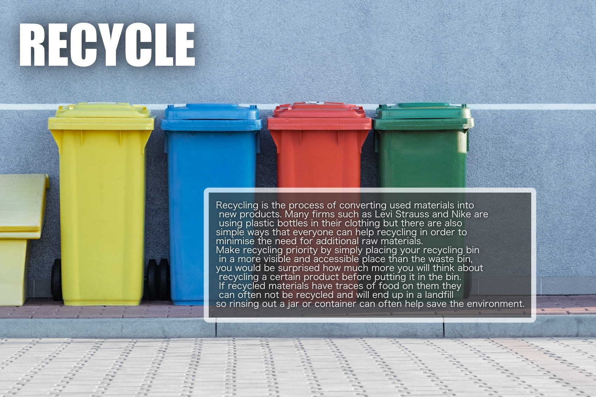
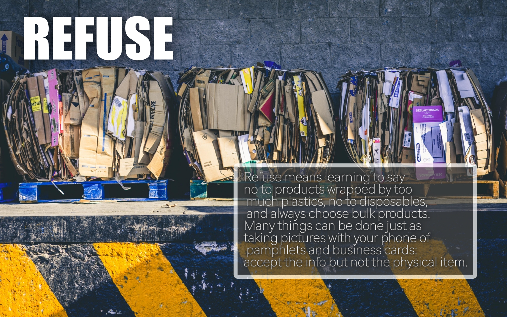
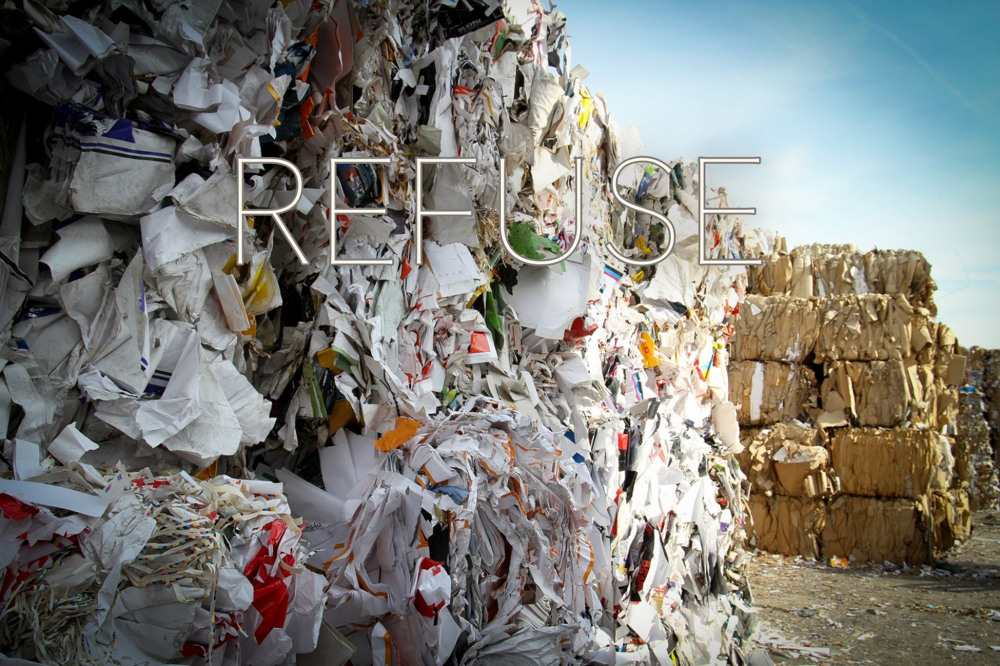

The five R of waste management

What has been done?
glfxhjgksdlfgdnjhc



Reuse
60% of recycling centres say that they are not able to recycle most of the waste that is delivered to them therefore a lot of the waste ends up in wastelands and increases transportation effects on the environment. Many items that are recycled can be easily reused in the house which keeps the materials out of the waste stream and reduces the environmental costs of transportation and the recycling process. Glass bottles or jars can easily be washed and reused for storage while nutella and mustard jars make great glasses! Yoghurt or butter tubs can be used for storing dry good such as rice and pasta and there are many creative ways to reuse plastic bottles from pencil holders to plant pots and bird feeders. It also doesn’t take much to buy a rain collector and reuse rain water for your garden, which can significantly help save fresh water.
Previous
Next